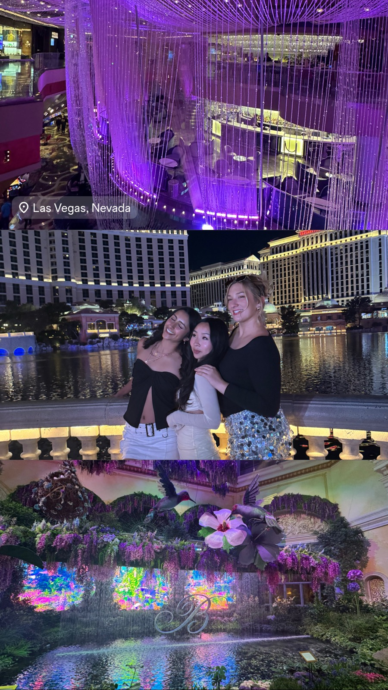
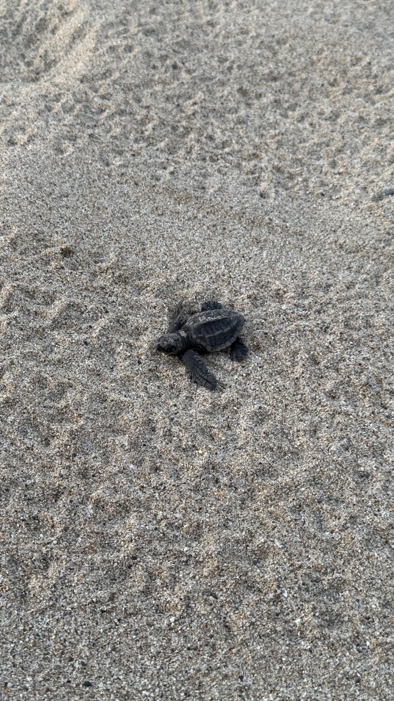

Travel and Photography
I say yes to almost any trip, camera always in hand. I am happiest finding the side quest and taking the long way there.


Fifteen trips in a year sounds like a lot until you treat every free weekend as an open tab. The camera comes along because the long way there is usually the point.